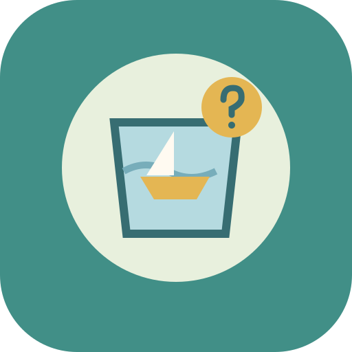
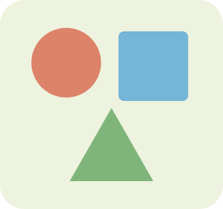

تطوير تطبيق قائم · ٤–٨مختبر لماذا: أتوقع وأجرّب
جرّب بالرسم المتحرك
نماذج SVG في ست تجارب موجودة. افتح تجربة الطفو أو القماش أو التدحرج أو الدفع أو الضوء أو الظل، ثم «جرّب بالرسم المتحرك».
افتح المختبر المطوّرنماذج صغيرة · اختيارات حقيقية · ممارسة خارج الشاشة
أُزيل نموذج «نصنع الحلول» من قائمة التطبيقات لتجنب تكرار الفكرة. أُضيف الرسم المتحرك إلى مختبر لماذا الموجود، ويبقى مخطط الجلسات متاحًا للمراجعة.

تطوير تطبيق قائم · ٤–٨نماذج SVG في ست تجارب موجودة. افتح تجربة الطفو أو القماش أو التدحرج أو الدفع أو الضوء أو الظل، ثم «جرّب بالرسم المتحرك».
افتح المختبر المطوّر
للمرافقاختيارات الطفل تصنع مسارًا متفرعًا، وتحول الاستراحة أو تغيير الوسيلة إلى تعديل حقيقي في الجلسة.
افتح نموذج التجربةهذه نسخ تجربة. نطق الجهاز متاح حسب دعمه، وتسجيلات الصوت المخصصة لم تكتمل بعد. اختُبرت أحجام شاشة متعددة؛ ما زالت تجربة الأجهزة الفعلية، ومنها Big TAB، مطلوبة.